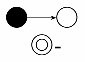
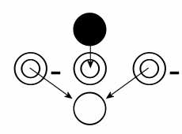

關於咒文與魔法，我比較喜歡把它往『科學』的方向去定義與探討。 雖然超自然力量目前為止我們科學界並沒有找到任何解釋與定理， 但是把科學與魔法和數學混雜在一起是很令人耐人尋味的。
這些魔法學的觀念一直到寫出短篇『Sword & Magic!』之後， 才有條列式的定義。它們原本是『Sword & Magic!』一文的註解， 而我在1995/10/30時作了第一次的整理，現在又再補充修改一次。
2001/05/06 -Zordius-
在魔法學算式中，所有可能的魔法分為1 至7 級。
其中等級1 至2 的咒文為小型咒文；等級3 至4 的咒文為中型咒文； 等級5 至6 的咒文為大型咒文；等級7 的咒文為巨型咒文。
魔法分為七系，各為衝擊、火炎、寒冰、光炙、雷電、重力、心靈。
衝擊系為魔法中最基本最原始的力量。衝擊系咒文是魔法的基礎， 也是魔法中攻擊效率最高，最直接的系。在複合咒文中，衝擊系力量經常出現。 衝擊系有時依衝擊介質分類成：地衝擊、水衝擊、風衝擊和空衝擊四個副系， 不過這種副系的觀念並不普遍。此系在數學上對應的方向為(0,0,1)。
火炎系是魔法中第二容易學會的。所有使物體升溫、振動、白熱化的力量， 皆歸類為火燄系咒文。火炎系咒文可用於多種性質的戰鬥，因此廣被魔導士所喜愛。 此系在數學上對應的方向為(0,-1,0)。
雷電系具有與火燄系咒文有同等的力量。所有對電子用起作用的力， 皆歸屬雷電系。雷電系咒文由於電磁共生效應，故存有一子系：磁系。 此系在數學上對應的方向為(-1,0,0)。
光炙系為魔法中耗能最大的系。所有光、射線、電磁波的控制， 皆為光炙咒文。光炙咒文雖然耗去大量魔法力，但因具有自然的驅魔力量， 因此常被用於對妖魔戰鬥。此系在數學上對應的方向為(1,0,0)。
寒冰系為魔法中第二困難的一系。所有使物體降溫、減速、黑體化的力量， 皆歸類為寒冰系咒文。此系魔法困難且使用不易，在魔法中算是個冷門的系。 此系在數學上對應的方向為(0,1,0)。
重力系為魔法中最難控制的力量。一切遮斷、增強、或扭曲重力的力量， 皆屬重力系咒文。分子內力量也歸屬於重力系。由近代物理超絃理論可推得， 時空系魔法為重力系之子系。此系在數學上對應的方向為(0,0,0)或NULL。
心靈系是一種只對生物起作用的力量，此系咒文對生物而言是最有效力的咒文， 但是也是七個魔法系中距離限制與衰退係數最大的系。 此系在數學上對應的方向為(0,0,-1)。
Z 子是魔法學與物理學整合理論中最重要的基本元素，也是魔法學模型之基礎。 魔法學模型有三大定律，亦稱魔導三定律：
魔法第一定律：又稱Z 子二分律。一個Z 子可分為兩個Z 子， 且此兩Z 子之所有特性與分裂前無任何不同之處。相對的，兩Z 子可融合為一個Z 子，且不產生任何性質上的變化。
魔法第二定律：又稱Z 子轉換律。在某特定條件下Z 子可以轉換為物質或能量； 在某特定條件下Z 子可以進行分裂；在某特定條件下Z 子可以進行融合。
由Z 子的二分律與轉換律綜合推導，可以產生超越質能守衡定律的結論。 若物質→轉換為Z 子→Z 子分裂→轉換為物質，則發生『質量增加』現象。 若物質→轉換為Z 子→Z 子融合→轉換為物質，則發生『質量減少』現象。
轉換律中所指的特定條件有三個，其專有名詞必需先加以介紹。 首先是『Z 子產生器』，它代表了Z 子會發生分裂時的特定條件；相對的， 『Z 子對消器』指的是Z 子發生融合的特定條件。 Z 子轉換為物質或能量條件稱為『Z 子轉換器』。
Z 子產生器與Z 子對消器恰能代表Z 子數量變動的一體兩面， 但Z 子轉換器僅能代表Z 子→物質或能量的單向過程。 因此，Z 子轉換器的『數量』定義擴增至負數， 負數的Z 子轉換器便可代表物質或能量→Z 子之過程。
魔法第三定律，又稱魔器不滅律。 一個Z 子轉換器可以轉成一個Z 子產生器加上一個Z 子對消器。 一個Z 子產生器加上一個Z 子對消器可以轉成一個Z 子轉換器。 所有次元中，Z 子轉換器數量的兩倍加上Z 子產生器再加上Z 子對消器為常數0 。
魔器不滅律在魔法學中的地位， 恰與『質能守衡』或『質量不滅』於純物理學上的地位對等。
就表面上看，Z 子二分律的危機在於Z 子的無限產生， 但因為Z 子分裂僅能發生於Z 子產生器，所以速度也受限於Z 子產生器的數量。 若Z 子產生器的數量增加，則Z 子對消器的數量也勢必增加。 這些計算上的結論與古典魔法學並無不合之處。
古典魔法學源起於將魔法以科學的方式加以解析， 雖然缺乏Z 子理論這種微觀的觀察，但也有許多成功的模型。
『魔素說』是古典魔法學最主要的架構，認為所有魔法皆源於魔素， 魔素為魔導的最小組成份子，而魔法的不同起於魔素的混合不同。 在Z 子論發現後，則發現魔素為Z 子所組成， Z 子排列法不同產生了各種魔素性質上的差異。
在魔素說下，魔法的產生源自魔素的各種作用與變化。古典魔法的魔素僅有五類， 分別為冰、炎、擊、心、雷，舊魔法時期的魔法分系也僅止於此五系。 魔素表是魔法解析學依照魔素類別（縱列）與特性（橫列）排列所得的表， 在魔素研究中占了很重要的地位。直至Z 子論出現， 才增補了『光』與『重』這兩列。光炙系與重力系是魔素表上的特例， 因為這兩種魔素並沒有特性上的分類，所以一格占滿了整個類別的縱列。
其它各魔素的特性從四類至七類不等，散於魔素表上的各格。 如果是炎魔素的第四列，就稱為『第四火炎魔素』，這是共通的命名規則。 空格代表了尚未發現其存在的魔素，除了被計算證明其魔素存在不可能的位置以外， 都極有發現新魔素的可能。
在Z 子論之下古典魔法的各個名詞有著以下的解釋。
魔素：Z 子產生器、Z 子對消器與Z 子轉換器的排列組成。
魔導場：魔導力所影響的範圍，或者是Z 子數量變動的地方。
魔導：魔素與其排列的變化過程，也就是魔法產生的過程。
魔導根：魔素進行重新排列前的狀態。
魔法就是魔素排列變化或魔素性質轉變。許多魔法反應是固定的、單向的， 只要將魔素以適當的方式排列，再加以促發，便會自然地引發其反應。 『魔導根』指的是一種高能階的排列方法， 其產生魔法反應的傾向比起一般隨意的魔素排列高很多。
魔素排列一般是三次元排列，但是也有四次元及以上的排列。 三次元以上的排列變化稱為『隱性』。
高能的魔素組成可能為不穩定平衡或穩定平衡，穩定的稱為『魔素結晶』。 也由於其穩定，因此不會自然產生魔法反應，必需要利用其它的魔導根引發反應。
Z 子產生器的符號為『●』；Z 子對消器的符號為『○』； Z 子轉換器的符號為『◎』。
由魔器不滅律可知，魔導的最初起源是『空』，即常數 0的狀態。
魔導產生的最基本圖形可以由魔器不滅律得到。若現在要得到一個Z 子產生器， 必然會產生一個Z 子對消器與一個負的Z 子轉換器。 這組『魔導』產生的過程可寫為下式：
NULL → -◎ + ● + ○
這樣一組必然的共生稱為『基礎魔導』，為魔素結構的基礎型式。 基礎魔導會形成一個穩定的Z 子流，這個Z 子流源自Z 子產生器， 而結束於Z 子對消器。Z 子流以『→』符號表示。
只要Z 子產生器中存有一個Z 子，則Z 子的分裂現象會不斷發生， 所產生的Z 子會自然流向Z 子對消器，在Z 子對消器內融合。 基礎魔導不會產生對世界質量與能量的影響， 因為Z 子並未進入Z 子轉換器或由Z 子轉換器中出現。
當Z 子流前進方向變化時，魔導現象或說魔法反應便有可能發生。
以第一衝擊魔素為例，這是魔素表當中最左上角的魔素， 也是組成最簡單的魔素。如右圖，第一衝擊魔素由三組基礎魔導所組成， 其中兩組為正魔導，一組為負魔導； 其中一對正魔導與負魔導的Z 子產生器與對消器正負抵消， 殘餘了各一正一負的Z 子轉換器。
由Z 子產生器產生的Z 子在流向Z 子對消器的途中便進入了Z 子轉換器， 在其中化為質能。而兩組負的Z 子轉換器則將質能轉為Z 子， 產生的Z 子流向了Z 子對消器。
當魔素組成魔導根或魔晶時，Z 子流就會更加地複雜， 最後形成各種形形色色的魔法反應。
簡單說，現代魔法學、Z 子理論是魔法中的物理學；古典魔法學、 魔素理論是魔法中的化學。
其它在文中所出現的名詞簡單解釋如下：
雙渦流：一種流動的咒文結構，多半是為了造成剪力破壞而特意編成的。
第六雷子魔素：雷魔素中最晚被發現的魔素，位於魔素表中的最後一格。速度極慢。
魔導引語：吟唱咒文的一種。具有穩定魔素結晶的功能。
單極破壞：對雷系咒文而言是指純電子或純電洞的破壞。
法根：用於吟唱咒文的隱性魔導根。
法印：利用手產生的魔力圖形。
自然魔力圖形：由魔法數學解出的五個圖形解，具有天然穩定魔素結晶功能的圖形。
穆氣流：風精靈的一種活動。
左精靈：巨形咒文中，多層次召喚層級二級以上的精靈。
魔法抗消：一種魔法作用，發生於魔極相反之同系咒文碰撞時。
力場：超距力作用的範圍。
其中『自然魔力圖形』的魔法數學部份、 『多層次召喚』的召喚魔法部份以後有機會再寫。